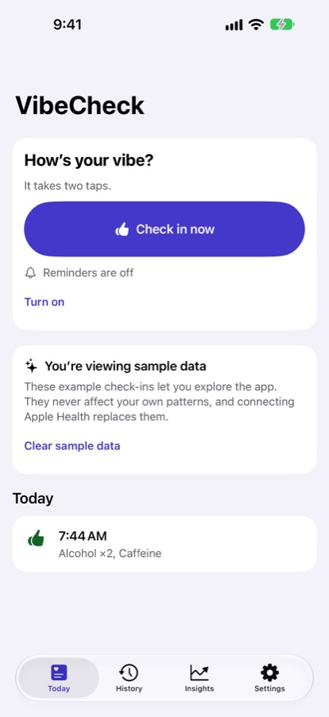
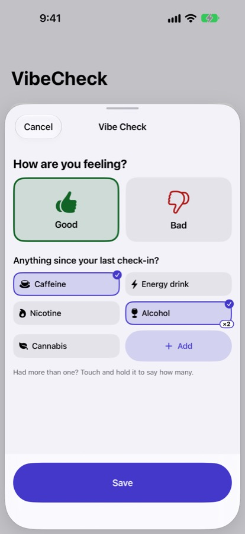
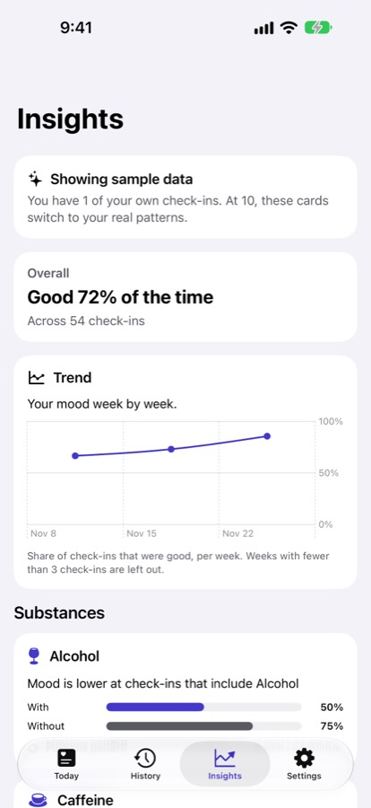

Notice how you feel, and what's behind it.
VibeCheck is a private journal for your mood and the things you take: coffee, alcohol, nicotine, medicines, supplements, or anything you add yourself. Tap how you feel, tap what you've had, and over time it shows what lines up with a better or worse day.

Today 
A check-in is two taps 
Insights
What it does
- Tap-only check-ins. Good or Bad, then the substances. No typing. From the app, a reminder, the Lock Screen, the Action Button, Siri or your Apple Watch.
- Reminders that adapt. It learns when you tend to check in and avoids quiet hours.
- Insights. How your mood compares with and without each substance, by time of day, and alongside your sleep, heart rate, steps and workouts. It tells you when there isn't enough data to say.
- Apple Health, read-only. Optional. Heart rate, heart rate variability, resting heart rate, sleep, steps and workouts add context to your check-ins. VibeCheck never writes to Health.
- Yours to keep. Export your check-ins as a CSV, import them again, or share a short PDF summary with a doctor.
Private by design
Your data stays on your devices. There are no accounts, no servers of ours and no analytics. Optional iCloud sync uses your own private iCloud, and your Apple Health numbers are never synced. An optional Face ID lock keeps the app closed to anyone else.
Good to know
- VibeCheck's built-in list only includes legal substances. You can add anything you want to track.
- It tracks and reflects. It doesn't give medical advice or tell you how much to take. If you're worried about your health or your use of any substance, talk to a doctor or pharmacist, or find a helpline.
- Requires an iPhone with iOS 26 or later. An Apple Watch app is optional.